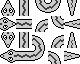
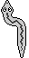

Змеи
Справка по web-клиенту (репозиторий, тема на форуме) для игры «Змеи».
Что и как
Прежде чем играть, необходимо зарегистрироваться на сервере. (Это временная мера, позже будет реализована единая с форумом авторизация). Если ваш логин на сервере не совпадает с логином на форуме, то желательно при регистрации указать свой форумный логин.
Выглядит клиент довольно примитивно, для его улучшения (или создания другого клиента) потребуется помощь форумчан. В первую очередь нужен набор нормальных шкур для змей.
Чтобы «примерить» шкуру на змею в движении, можно воспользоваться утилитой. Шкура представляет собой изображение размером 80×64 пикселя (5×4 клетки). Каждый ряд соответствует направлению (вверх, вправо, вниз, влево), каждый столбец - элементу (голова, тело, изгиб вправо, изгиб влево, хвост). Пример:

Для упрощения работы со шкурами можно также использовать изображения размером 32×64 пикселя со змеей, состоящей из пяти сегментов: в левом верхнем углу голова, смотрящая вверх, затем изгиб вправо, изгиб влево, тело и хвост. В этом случае утилита сама сгенерирует шкуру на основе этого изображения. Пример:

Редактирование змеи
Клик по подсвеченной кнопке в нижней части редактора снимает подсветку. Кнопки шаблонов/наборов, групп и модификатора «НЕ» могут быть подсвечены независимо. При редактировании карты можно менять либо шаблон/набор, содержащийся в клетке, либо группу, либо и то, и другое. Если выбран только шаблон/набор, то при клике на чистой клетке карты автоматически назначается первая И-группа. Модификатор «НЕ» ставится или снимается (в зависимости от состояния кнопки) всегда.
Расчет и просмотр боя
Одновременно может рассчитываться только один бой для каждого «заказчика». Расчет выполняется при получении запроса на создание боя или получения информации о бое. Время расчета в рамках одного запроса ограничено несколькимим секундами (промежуточные результаты сохраняются), так что от клиента может потребоваться несколько последовательных запросов. Web-клиент при запуске проверяет, есть ли незавершенный бой, и если да, то посылает серверу запросы на расчет и блокирует прочие действия игрока до его завершения.
При просмотре боя игрок может выбрать змею для отладки (выбрать можно либо свою змею, либо бота). По умолчанию ни одна змея не выбрана. Если змея выбрана, то на каждом ходу отображается ситуация перед шагом этой змеи (если змея не выбрана, показывается ситуация перед первым шагом хода). По окончании боя показывается ситуация после последнего шага последнего хода.
Расчет рейтинга
Формула расчета рейтингов игроков временная, в будущем она, возможно, изменится, и рейтинги будут сброшены.
Когда игрок впервые назначает бойца, его рейтинг равен нулю. После рейтингового боя для бойцов высчитываются ожидаемые рейтинги, и каждому бойцу присваивается среднее арифметическое между его текущим и ожидаемым рейтингом. Ожидаемый рейтинг равен 100 + длина×10 − сумма_текущих_рейтингов/4. Если ожидаемый рейтинг больше текущего, он округляется вверх, если меньше, то округляется вниз.